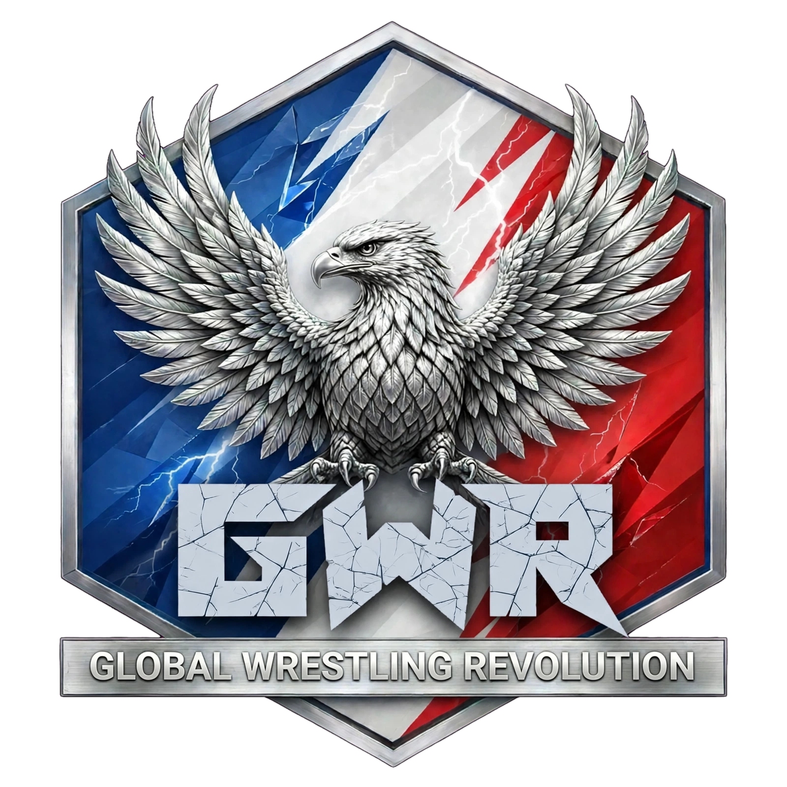
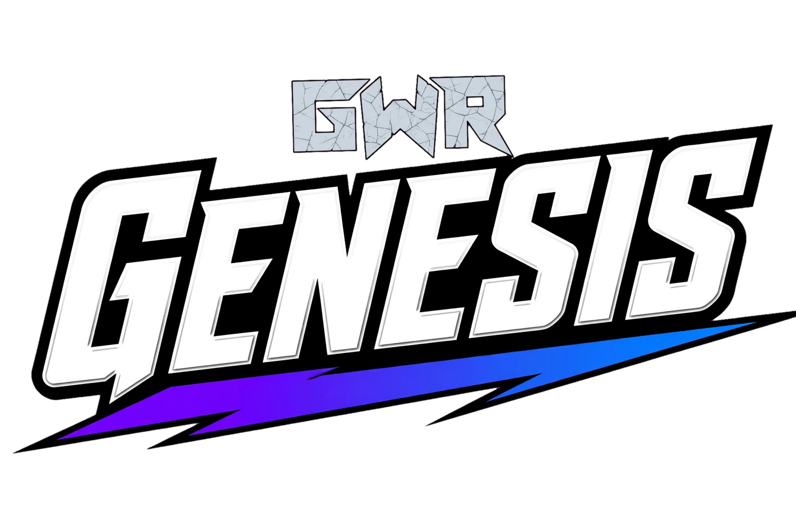

⚡ SHOW PRINCIPAL
Genesis
Le projet central de la nouvelle étape de la GWR. Son retour est en préparation depuis le 22 octobre 2026.

Depuis le jeudi 22 octobre 2026, la GWR met Collision et Dynasty à l’arrêt pour concentrer son énergie sur le retour de Genesis. La fédération se réorganise autour d’un seul show et d’un roster commun.

⏸ Réorganisation en coursCollision et Dynasty ne sont plus présentés comme deux shows actifs. Leurs effectifs sont réunis dans un roster unique destiné à la nouvelle ère Genesis.
Le projet central de la nouvelle étape de la GWR. Son retour est en préparation depuis le 22 octobre 2026.
Collision est suspendu pendant la réorganisation. Son roster rejoint le roster commun de la GWR.
Dynasty est également en pause. Il n’y a plus de séparation des effectifs entre les deux anciens shows.
Genesis est le rendez-vous hebdomadaire de la GWR. Collision et Dynasty restent en pause et leurs effectifs forment désormais un roster unique.
Cédric — Reddice (toi-même)
Tymothy — DrySko (« Voir le Gaulois »)
calcul automatique…